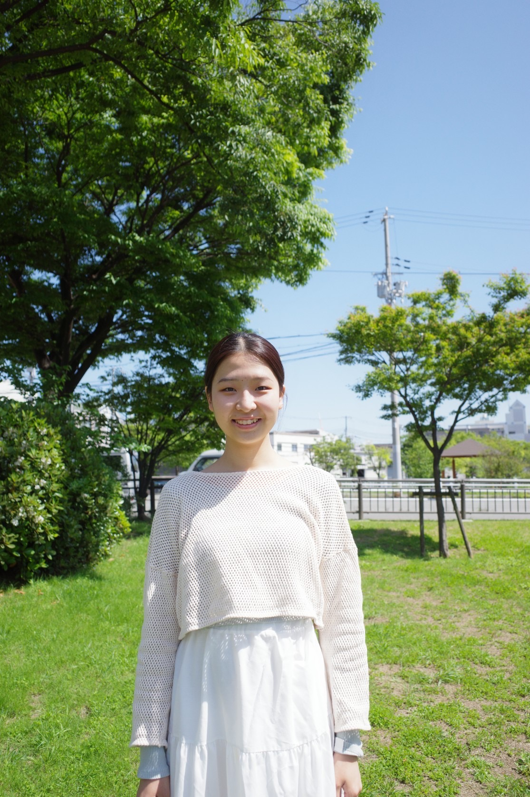

About
We are a research group working on machine learning, cosmology and statistical inference. Replace this paragraph with a short description of what the group does and the questions it cares about.
Add a second paragraph for methods, software, or collaborations. Mention if you are recruiting students or postdocs, and link to the if you’re interested section.
News
-
New group website launched
Short note about the new site and where to find people, projects and publications.
-
Paper accepted to Journal Name
One or two sentences on the result, with a link to the paper.
-
Talk or award announcement
Who gave the talk or received the award, and where.
Older news: archive
People
Faculty
Graduate students
Graduate student
- Cosmology & Large Scale Structure
- Machine Learning & Statistics
Project: SimBIG: Simulation Based Inference of Galaxies
I am a 2nd-year graduate student at UT Austin. I am broadly interested in the intersections of machine-learning methods and cosmology. I am currently developing SimBIG-II, a scalable forward-modeling pipeline to extract cosmological information from large spectroscopic surveys of galaxies (e.g. DESI). When I'm not doing cosmology (read: debugging my code), I enjoy reading, swimming, yoga, and spending time outdoors!
Graduate student
- Extragalactic astronomy
- Machine learning
Project: UberSED
I am a second year graduate student working on data-driven techniques to maximally extract physical properties from galaxy spectra. My work lies on the intersection of observations and theory where I am using machine learning techniques to learn and challenge current theoretical models with respect to observations.
Graduate student
- Computational cosmology
- Machine learning
- Bayesian inference
- High-redshift galaxies
- Dark matter
Project: Pixel to Cosmology
My research focuses on developing machine learning and simulation-based inference methods to extract cosmological information from high-redshift galaxy populations. As part of the Pixel-to-Cosmology (Px2Cosmo) project, I am exploring neural density estimation and Bayesian inference techniques to improve cosmological parameter estimation, with the broader goal of constraining cosmological models and dark matter properties using observations of the early universe.
Undergraduate students

Senior Undergraduate student
Project: QuassiQ, Metal Absorber
Using Machine learning framework to identify changing-look quasars.

Junior Undergraduate student
- Extragalactic astronomy
- Computational astronomy
- Astrostatistics
- Cosmological Inference
- Supermassive black holes
Project: QuassiQ
Using Machine learning framework to identify changing-look quasars.

Sophomore Undergraduate student
Project: Metal Absorber
Using Machine learning framework to identify changing-look quasars.
Affiliates/Friends

Projects
UberSED
Data-driven techniques to extract physical properties from galaxy spectra, using machine learning to test current theoretical models against observations.
Pixel to Cosmology (Px2Cosmo)
Simulation-based inference and neural density estimation to measure cosmological parameters from high-redshift galaxy populations.
Publications
2026
-
Paper Title Goes Here
Journal Name, Volume, Pages (2026) · arXiv · code -
Paper Title Goes Here
Journal Name, Volume, Pages (2026) · arXiv
2025
-
Paper Title Goes Here
Journal Name, Volume, Pages (2025) · arXiv · code -
Paper Title Goes Here
Journal Name, Volume, Pages (2025) · arXiv
Full list on ADS or Google Scholar.
If you’re interested
We welcome questions from prospective graduate students, postdocs and collaborators. If our work interests you, please contact ChangHoon Hahn directly.
ChangHoon Hahn changhoon.hahn@utexas.edu
In your email, include a short note about your background and the project or question that draws you to the group, and attach your CV if you have one.
Contact
galactic.ai
Department of Astronomy
University of Texas at Austin
Street Address, Austin, TX, Postcode
Email: changhoon.hahn@utexas.edu